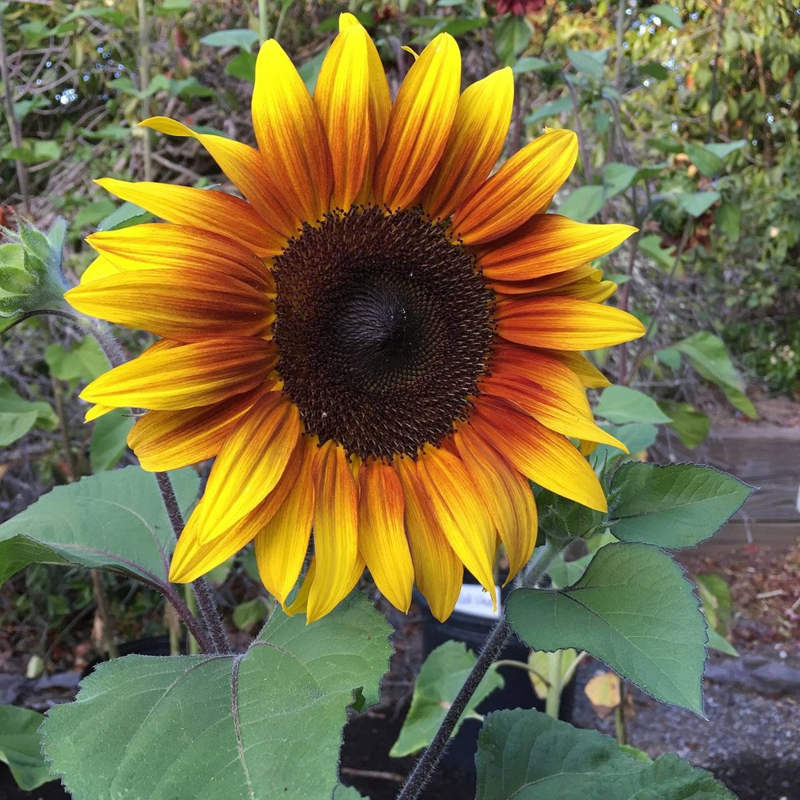
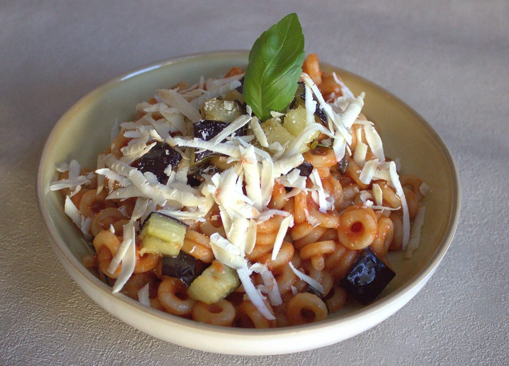
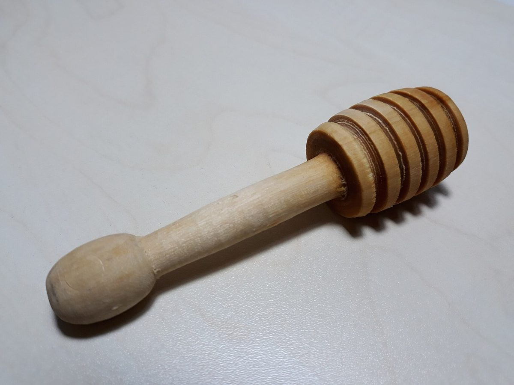

写真「Sunflowers public domain helianthus annuus IMG 1180-」/ S.G.S. / CC0 1.0(イメージ)
ABOUT
ひとりで営む、昼のカフェ
Haru Haru cafeは、2023年4月にイオンモール津山の近く(津山市河辺)にオープンしたカフェです。ランチを中心に、定食や単品、お子様メニュー、日替わりのランチなどが紹介されています。
- 店内の奥に駄菓子コーナーがあります(紹介記事より)
- テラス席・赤ちゃん用チェアの紹介があります
- Instagramでは、ひとりで運営しているため電話に出られないことがある旨が案内されています
店名の意味や由来は確認できていません。「ほっとひと息」というコンセプトは、お店の情報から制作側が考えたイメージです。

写真「Porcelain teapot on windowsill (Unsplash)」/ Nathan Fertig / CC0 1.0(イメージ)
MENU
ごはんと甘いもの
ランチ(定食・単品・お子様メニュー・日替わり)があると紹介されています。内容や価格は変わることがあるため、詳しくは「準備中」です。下の写真はいずれもイメージです。

ごはんもの(イメージ)
日替わりのランチなど。詳細は準備中。
写真「Pasta alla Norma - Wiki Loves Sicilia」/ 8w9d / CC0 1.0(イメージ)

トースト(イメージ)
軽めのひと皿。実際のメニューは準備中。
写真「Toasted oatmeal bread with butter and apple butter - Massachusetts」/ Daderot / CC0 1.0(イメージ)


- 営業時間
- 準備中
- 定休日
- 準備中
- 価格
- 準備中

写真「Oatmeal with a cherry compote」/ Chandapiwa Malema / CC0 1.0(イメージ)

写真「Chocolate financier」/ Syced / CC0 1.0(イメージ)

写真「Mocha Cake - Djanogly Café, Tate Britain 2026-03-24」/ Andy Li / CC0 1.0(イメージ)

写真「Pumpkin cakes」/ Fumikas Sagisavas / CC0 1.0(イメージ)

写真「Honey dipper」/ Matankic / CC0 1.0(イメージ)

写真「Blueberriessss」/ Suzy Hazelwood / CC0 1.0(イメージ)

写真「Bright turquoise mug sits on a wooden table by the window」/ Shixart1985 / CC BY 2.0(イメージ)

写真「Cup of tea at the Gorreana tea factory」/ Kritzolina / CC BY-SA 4.0(イメージ)
VOICE
口コミ(イメージ例)
お昼にふらっと寄りました。お腹いっぱいになって、気持ちもゆるっとほどけました。
子ども連れでも入りやすい雰囲気でした。奥の駄菓子コーナーに子どもが夢中でした。
テラス席でのんびり。また近くに来たら寄りたいなと思いました。
※上記は制作側が作ったイメージ例で、実際のお客様の声ではありません。
ACCESS
アクセス
- 店名
- Haru Haru cafe
- 住所
- 〒708-0842 岡山県津山市河辺708
- 電話
- 準備中
- @haruharu.cafe
このページの写真は、フリー素材(クリエイティブ・コモンズ等)のイメージ写真です。お店の実際の様子・料理ではありません。
写真クレジット
- images/pasta.jpg「Pasta alla Norma - Wiki Loves Sicilia」/ 8w9d / CC0 1.0 / 出典
- images/toast.jpg「Toasted oatmeal bread with butter and apple butter - Massachusetts」/ Daderot / CC0 1.0 / 出典
- images/choco.jpg「Chocolate raspberry dessert」/ Funknendai / CC0 1.0 / 出典
- images/cocoa.jpg「Hot chocolate (Unsplash)」/ Alisa Anton / CC0 1.0 / 出典
- images/oatmeal.jpg「Oatmeal with a cherry compote」/ Chandapiwa Malema / CC0 1.0 / 出典
- images/financier.jpg「Chocolate financier」/ Syced / CC0 1.0 / 出典
- images/mocha.jpg「Mocha Cake - Djanogly Café, Tate Britain 2026-03-24」/ Andy Li / CC0 1.0 / 出典
- images/pumpkin.jpg「Pumpkin cakes」/ Fumikas Sagisavas / CC0 1.0 / 出典
- images/sunflower.jpg「Sunflowers public domain helianthus annuus IMG 1180-」/ S.G.S. / CC0 1.0 / 出典
- images/blueberry.jpg「Blueberriessss」/ Suzy Hazelwood / CC0 1.0 / 出典
- images/honey.jpg「Honey dipper」/ Matankic / CC0 1.0 / 出典
- images/mug.jpg「Bright turquoise mug sits on a wooden table by the window」/ Shixart1985 / CC BY 2.0 / 出典
- images/teacup.jpg「Cup of tea at the Gorreana tea factory」/ Kritzolina / CC BY-SA 4.0 / 出典
- images/teapot.jpg「Porcelain teapot on windowsill (Unsplash)」/ Nathan Fertig / CC0 1.0 / 出典
ライセンス: CC0 1.0 / CC BY 2.0 / CC BY-SA 4.0。加工: 縮小・CSSによるトリミング。